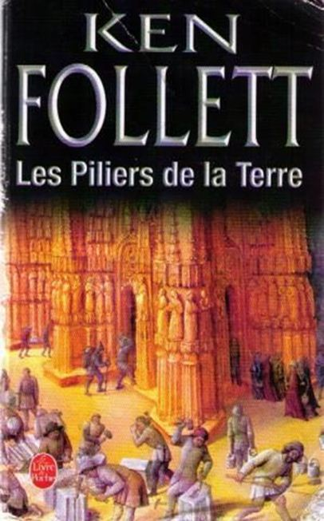
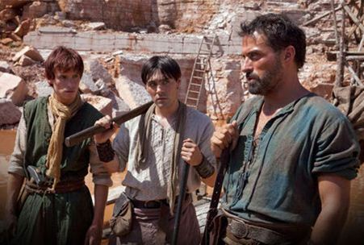

C’est à un plongeon abrupt dans le monde des constructeurs de cathédrales que nous invite Ken Follet avec Les piliers de la terre, chez Stock, en livre de poche.
Une série télé a été tirée du roman, je ne l’ai pas vue ; mais l’époque, les actions nombreuses, l’aventure exaltante et la simplicité des personnages doivent donner un bon rendu cinématographique.
L’auteur écrit généralement des romans d’espionnage, on trouve d’ailleurs dans « Les piliers de la terre » des renversements de situations et des intrigues nouées puis déjouées dignes des meilleurs romans du genre.
C’est donc à une plongée de quelques siècles dans l’histoire et de 1180 pages, pas moins, que l’écrivain à succès nous invite.
Nous sommes subjugués par l’entourage d’un maître bâtisseur, Tom, et des siens : ses femmes, ses enfants et leurs devenirs dans l’Angleterre du XIIème siècle. Sa première femme sous-alimentée mourut jeune et en couche, car en cette époque les vies étaient généralement brèves. Le roman s’égare un peu en Espagne et en France, mais peu, juste ce qu’il faut pour apporter une note « exotique » à la saga.
Certes nous sommes loin de la grande littérature et des belles phrases qu’on prend plaisir à relire pour les savourer. Inutile de chercher dans l’ouvrage une phrase mémorable à donner au lecteur : il n’y en a pas !
Question d’écriture ou de traduction ? Comme le roman fut traduit par un des plus illustres traducteurs anglais-français, Jean Rosenthal, je pencherais plutôt pour l’écriture. La seule phrase à retenir serait celle-ci :
« Son rêve lui dit une chose, qui n’avait jamais été claire pour elle : son père avait effrayé sa mère et si fortement réprimé sa joie de vivre qu’elle s’était desséchée avant de mourir telle une fleur sans eau. » (p.428)
En quelque presque 1200 pages, c’est peu... Le style n’est pas des plus recherchés, le descriptif est parfois assez sommaire et deux ou trois péripéties du roman sont assez irréalistes, elles sont placées juste pour amener l’épisode suivant, le procédé manque parfois de légèreté.
Ces introductions minimales se justifient pour donner une impression d’ensemble méthodiquement construit, à la manière d’une cathédrale.
Le dictionnaire n’est pas un outil indispensable pour lire « Les piliers de la terre » et c’est peut-être ce qui en fait la richesse ! L’ouvrage peut se lire allongé sur une chaise longue, inutile d’avoir Wikipédia ou Google à portée de main. Sauf peut-être si l’on n’a aucune connaissance en architecture sacrée, que l’on ignore ce qu’est un transept et une nef. Sinon, le livre ne présente aucune difficulté de langage et de vocabulaire. Idéal pour des gens qui apprennent le français et pour ceux qui en sont déjà à un niveau courant. Ce qui ne veut pas dire que l’auteur écrit à la légère, sa documentation est bien fournie, une véritable recherche historique a eu lieu avant le travail d’écriture.
Ce qui importe ici, c’est l’histoire de ces pauvres gens qui deviennent parfois riches et de ces riches salauds qui finissent parfois pauvres ou sur la potence.
Comme dans tout bon roman positif, il y a une justice ; après avoir beaucoup souffert Aliéna et Jack sont heureux, ils se marient et ont beaucoup d’enfants, qui bien sûr sont doués dans les domaines dans lesquels ils entreprennent.
Les gentils sont à gauche et les méchants à droite, peu importe. Ce qui compte c’est qu’ils soient bien séparés, comme le faisait Charlemagne, selon la légende, ou comme le font encore les séries B américaines. On sait dès le départ qui est bon et qui est mauvais, ça aide à comprendre l’intrigue qui n’est pas mince !
À ma gauche les bons : Tom le bâtisseur, Ellen sa compagne que l’on dit un peu sorcière, et son fils adoptif, Jack, qui prendra la suite de Tom. Aliena est la jeune victime idéale, poursuivie par un méchant, mais elle apprendra vite à se défendre. Le Prieur Philip figure la bonté de l’Église, l’archétype du moine chrétien. Les méchants sont en trio : l’Evêque Waleran, Williams Hamleigh un usurpateur, le bras armé de Waleran. Il faut y rajouter Alfred, un des fils de Tom. Il y a aussi des neutres, tel Martha, qui constituent le fond de la trame.
La grande saga commence en 1135 et se termine en 1174, couvrant une quarantaine d’années. En route on perd quelques héros, Tom le bâtisseur, mais son fils spirituel, Jack prend sa suite. Jack a appris le métier de maçon avec son père, mais il a voyagé pour devenir un Maître-Bâtisseur. En France il a séjourné à Saint-Denis, où il travailla à la construction de l’abbatiale. -Devenue cathédrale, Saint Denis abritait les restes des rois de France, elle fut mise à sac à la Révolution et les restes squelettiques des rois et reines de France distribués à la foule sanguinaire.- ( Note personnelle)
Jack voyagea également en Espagne en s’égarant sur les chemins de Compostelle.
Pourvu d’un savoir nouveau il rentrera à Kingbridge (ville imaginaire) pour y finir la cathédrale que son Père avait commencée, il continuera d’ériger vers le ciel ce vaisseau de la foi voulu par Tom, en y rajoutant le savoir des maçons français qu’il a acquis à Saint-Denis.
De l’aventure de la première à la dernière page, des intrigues, des rebondissements.
Le mortier qui scelle tous ces personnages reste bien sûr la construction de la cathédrale de Kingbridge. On vit au fil des pages les réunions corporatistes des maçons, des charpentiers, on assiste aux sanctions contre des fautifs, aux négociations salariales décidées en groupe, un « syndicat » avant l’heure.
- Ce n’est pas sans raison qu’une des premières lois de la République, la loi Le Chapelier, fut l’abolition des corporations. La bourgeoisie « révolutionnaire » ne laissait rien au hasard.- (re-note personnelle)
On découvre que la corporation régissait non seulement la vie du chantier et les devoirs des compagnons, mais aussi leur vie privée, leurs mœurs.
On apprend également comment fonctionnait d’autres corps de métiers, d’autres branches de l’économie moyenâgeuse, notamment le commerce de la laine, les techniques de filages en évolution constante. L’agriculture moyenâgeuse n’est pas oubliée. Les partages de pouvoir entre l’Église et l’aristocratie, les rivalités au sein de l’Église même, entre évêques et prieurs sont aussi dans le lot, en trame de fond de l’aventure épique que sont « Les piliers de la terre ». On a pu dire de cet ouvrage qu’il était un roman de gare, c’est peut-être vrai quelque part, mais il est aussi une peinture sociale, un roman historique, une saga plaisante à lire riche en rebondissements et où l’on ne s’ennuie jamais, que demander de plus ?